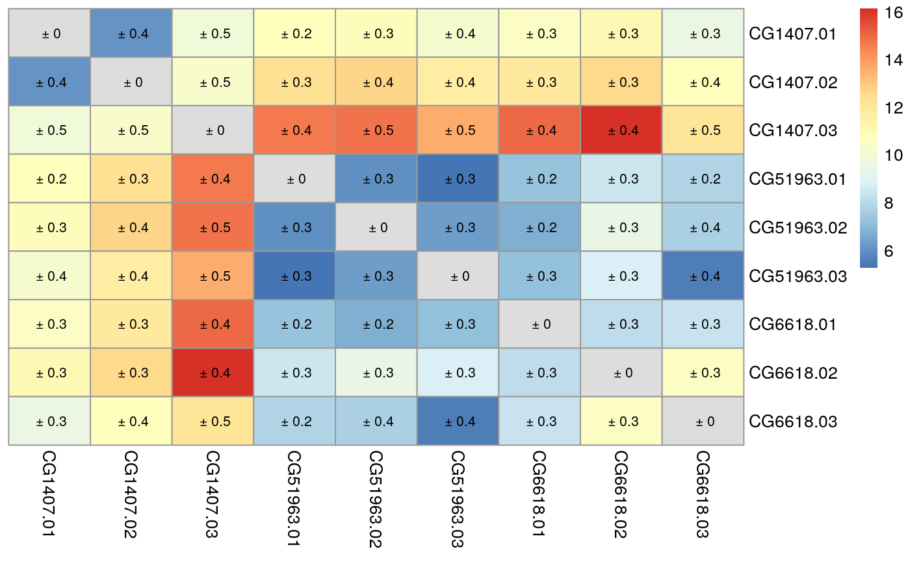

The goal of proDA is to identify differentially abundant proteins in label-free mass spectrometry data. The main challenge of this data are the many missing values. The missing values don’t occur randomly but especially at low intensities. This means that they cannot just be ignored. Existing methods have mostly focused on replacing the missing values with some reasonable number (“imputation”) and then run classical methods. But imputation is problematic because it obscures the amount of available information. Which in turn can lead to over-confident predictions.
proDA on the other hand does not impute missing values, but constructs a probabilistic dropout model. For each sample it fits a sigmoidal dropout curve. This information can then be used to infer means across samples and the associated uncertainty, without the intermediate imputation step. proDA supports full linear models with variance and location moderation.
Installation
You can install the development version from GitHub with:
# install.packages("devtools")
devtools::install_github("const-ae/proDA")The pkgdown documentation is available on https://const-ae.github.io/proDA/reference
In the following section, I will give a very brief overview on the main functionality of the proDA package. New users are advised to directly go to section two, where I give a complete walkthrough and explain in detail, what steps are necessary for the analysis of label-free mass spectrometry data.
Quickstart
The three steps that are necessary to analyze the data are
- Load the data (see vignette on loading MaxQuant output files)
- Fit the probabilistic dropout model (
proDA()) - Test in which proteins the coefficients of the model differ (
test_diff())
# Load the package
library(proDA)
# Generate some dataset with known structure
syn_dataset <- generate_synthetic_data(n_proteins = 100, n_conditions = 2)
# The abundance matrix
syn_dataset$Y[1:5, ]
#> Condition_1-1 Condition_1-2 Condition_1-3 Condition_2-1 Condition_2-2 Condition_2-3
#> protein_1 18.84931 19.06662 19.03464 NA 18.93679 19.73022
#> protein_2 20.75887 20.61900 20.33392 20.59803 20.81937 20.72472
#> protein_3 NA 18.61271 18.96289 NA 19.56371 19.32429
#> protein_4 25.62239 24.91191 25.47405 25.09780 24.42479 24.47261
#> protein_5 23.60771 22.89148 23.02004 23.21011 23.12756 23.86721
# The labelling of columns to two conditions
syn_dataset$groups
#> [1] Condition_1 Condition_1 Condition_1 Condition_2 Condition_2 Condition_2
#> Levels: Condition_1 Condition_2
# Fit the probabilistic dropout model
fit <- proDA(syn_dataset$Y, design = syn_dataset$groups)
# Identify which proteins differ between Condition 1 and 2
test_diff(fit, `Condition_1` - `Condition_2`, sort_by = "pval", n_max = 5)
#> # A tibble: 5 x 10
#> name pval adj_pval diff t_statistic se df avg_abundance n_approx n_obs
#> <chr> <dbl> <dbl> <dbl> <dbl> <dbl> <dbl> <dbl> <dbl> <dbl>
#> 1 protein_95 0.000000903 0.0000903 -5.03 -18.5 0.272 6.36 21.3 6. 6
#> 2 protein_98 0.00000620 0.000310 4.36 13.6 0.321 6.36 21.8 6. 6
#> 3 protein_96 0.0000153 0.000509 8.47 20.1 0.422 4.46 22.4 4.10 4
#> 4 protein_100 0.000117 0.00294 3.05 10.3 0.296 5.19 21.3 4.83 5
#> 5 protein_91 0.000158 0.00316 -4.25 -11.8 0.359 4.45 19.2 4.09 4Other helpful functions for quality control are median_normalization() and dist_approx().
proDA Walkthrough
proDA is an R package that implements a powerful probabilistic dropout model to identify differentially abundant proteins. The package was designed specifically with label-free mass spectrometry data in mind, which poses the challenge of many missing values.
But all this is useless if you cannot load your data. So in the next section, I will give an example how to load the abundance matrix.
Loading Data
I will now demonstrate how to load a MaxQuant output file. For more information about different approaches, you can also take a look at the vignette on loading data.
MaxQuant is one of the most popular tools for handling raw MS data. It produces a number of files. The important file that contains the protein intensities is called proteinGroups.txt. It is a large table with detailed information about the identification and quantification process for each protein group (which I will from now on just call “protein”).
This package comes with an example proteinGroups.txt file, located in the package folder. Naturally, your path will differ because of the installation location.
system.file("extdata/proteinGroups.txt", package = "proDA", mustWork = TRUE)
#> [1] "/home/constantin/R/x86_64-pc-linux-gnu-library/3.6/proDA/extdata/proteinGroups.txt"In this example, I will use the base R functions to load the data, because they don’t require any additional installed packages.
# Load the table into memory
maxquant_protein_table <- read.delim(
system.file("extdata/proteinGroups.txt", package = "proDD", mustWork = TRUE),
stringsAsFactors = FALSE
)As I have mentioned, the table contains a lot of information (359 columns!!), but we are only interested in the columns which contain the measured intensities.
# I use a regular expression (regex) to select the intensity columns
intensity_colnames <- colnames(maxquant_protein_table)[grepl("^LFQ\\.intensity\\.",
colnames(maxquant_protein_table))]
head(intensity_colnames)
#> [1] "LFQ.intensity.CG1407.01" "LFQ.intensity.CG1407.02" "LFQ.intensity.CG1407.03"
#> [4] "LFQ.intensity.CG4676.01" "LFQ.intensity.CG4676.02" "LFQ.intensity.CG4676.03"
# Create the intensity matrix
abundance_matrix <- as.matrix(maxquant_protein_table[, intensity_colnames])
# Adapt column and row maxquant_protein_table
colnames(abundance_matrix) <- sub("^LFQ\\.intensity\\.", "", intensity_colnames)
rownames(abundance_matrix) <- maxquant_protein_table$Protein.IDs
# Print top matrix
abundance_matrix[46:48, 1:6]
#> CG1407.01 CG1407.02 CG1407.03 CG4676.01 CG4676.02 CG4676.03
#> A0A0B4K6W1;P08970 713400 845440 0 0 1032600 0
#> A0A0B4K6W2;A0A0B4K7S0;P55824-3;P55824 5018800 4429500 2667200 0 8780200 1395800
#> A0A0B4K6X7;A1Z8J0 0 0 0 0 0 0After extracting the bits from the table we most care about, we will have to adapt the matrix slightly.
First, MaxQuant codes missing values as 0. This is misleading, because the actual abundance probably was not zero, but just some value too small to be detected by the mass spectrometer. Accordingly, I will replace all 0 with NA.
Second, the raw intensity values have a linear mean-variance relation. This is undesirable, because a change of x units can be a large shift if the mean is small or irrelevant if the mean is large. Luckily, to make the mean and variance independent, we can just log the intensities. Now a change of x units is as significant for highly abundant proteins, as it is for low abundant ones.
abundance_matrix[abundance_matrix == 0] <- NA
abundance_matrix <- log2(abundance_matrix)
abundance_matrix[46:48, 1:6]
#> CG1407.01 CG1407.02 CG1407.03 CG4676.01 CG4676.02 CG4676.03
#> A0A0B4K6W1;P08970 19.44435 19.68934 NA NA 19.97785 NA
#> A0A0B4K6W2;A0A0B4K7S0;P55824-3;P55824 22.25891 22.07871 21.34689 NA 23.06582 20.41266
#> A0A0B4K6X7;A1Z8J0 NA NA NA NA NA NAQuality Control
It is well established truth that quality control (QC) is essential for a successful bioinformatics project, because mistakes happen. Often we start with normalizing the data to remove potential sample specific effects. But already this step is challenging, because the missing values cannot easily be corrected for. Thus, a first helpful plot is to look how many missing values each sample contains.

We can see that the number of missing values differs substantially between samples (between 30% and 90%). If we take a look at the intensity distribution for each sample, we see that they differ substantially as well.
boxplot(abundance_matrix,
ylab = "Intensity Distribution",
xlab = "Sample 1 to 36")
Note that, the intensity distribution is shifted upwards for samples (for example the last one) which also have a large number of missing values. This agrees with our idea that small values are more likely to be missing. On the other hand, this also demonstrates why normalization methods such as quantile normalization are problematic. They distort the data until all the distributions are equal. I will apply the more “conservative” median normalization, which just ignores the missing values. It transforms the values so that the median difference between the sample and average across all other samples is zero.
normalized_abundance_matrix <- median_normalization(abundance_matrix)da <- dist_approx(normalized_abundance_matrix)# This chunk only works if pheatmap is installed
# install.packages("pheatmap")
sel <- c(1:3, # CG1407
7:9, # CG59163
22:24)# Cg6618
plot_mat <- as.matrix(da$mean)[sel, sel]
plot_mat[diag(9) == 1] <- NA
uncertainty <- matrix(paste0(" ± ",round(as.matrix(da$sd * 1.96)[sel, sel], 1)), nrow=9)
pheatmap::pheatmap(plot_mat,
cluster_rows = FALSE, cluster_cols = FALSE,
display_numbers= uncertainty,
number_color = "black")
Fitting the Probabilistic Dropout Model
In the next step we will fit the actual linear probabilistic dropoout model to the normalized data. But before we start I will create a data.frame that contains some additional info on each sample, in particular to which condition that sample belongs.
sample_info_df <- data.frame(name = colnames(normalized_abundance_matrix),
stringsAsFactors = FALSE)
sample_info_df$condition <- substr(sample_info_df$name, 1, nchar(sample_info_df$name) - 3)
sample_info_df$replicate <- as.numeric(
substr(sample_info_df$name, nchar(sample_info_df$name) - 1, 20)
)
sample_info_df
#> # A tibble: 36 x 3
#> name condition replicate
#> <chr> <chr> <dbl>
#> 1 CG1407.01 CG1407 1
#> 2 CG1407.02 CG1407 2
#> 3 CG1407.03 CG1407 3
#> 4 CG4676.01 CG4676 1
#> 5 CG4676.02 CG4676 2
#> 6 CG4676.03 CG4676 3
#> 7 CG51963.01 CG51963 1
#> 8 CG51963.02 CG51963 2
#> 9 CG51963.03 CG51963 3
#> 10 CG5620A.01 CG5620A 1
#> # … with 26 more rowsNow we can call the proDA() function to actually fit the model. We specify the design using the formula notation, referencing the condition column in the sample_info_df data.frame that we have just created. In addition, I specify that I want to use the S2R condition as the reference because I know that it was the negative control and this way automatically all coefficients measure the difference between the condition and the negative control.
fit <- proDA(normalized_abundance_matrix, design = ~ condition,
col_data = sample_info_df, reference_level = "S2R")
fit
#> Parameters of the probabilistic dropout model
#>
#> The dataset contains 36 samples and 122 proteins
#> 59.7% of the values are missing
#>
#> Experimental design: y~condition
#> The model has successfully converged.
#>
#> The inferred parameters are:
#> location_prior_mean: 19.3
#> location_prior_scale: 9.6
#> location_prior_df: 3
#> variance_prior_scale: 0.315
#> variance_prior_df: 1.11
#> dropout_curve_position: 19.6, 18, 19.8, 24.3, ...
#> dropout_curve_scale: -1.17, -0.661, -1.3, -2.44, ...The proDAFit object prints a number of useful information about the convergence of the model, the size of the dataset, the number of missing values, and the inferred hyper parameters.
To make it easy to find available methods on the proDAFit object, the $-operator is overloaded and shows a list of possible functions:
# Equivalent to feature_parameters(fit)
fit$feature_parameters
#> # A tibble: 122 x 4
#> n_approx df s2 n_obs
#> <dbl> <dbl> <dbl> <dbl>
#> 1 12.0 0.001 419. 5
#> 2 12.0 0.001 453. 1
#> 3 17.0 6.13 6.13 14
#> 4 12.0 0.001 94.4 6
#> 5 16.8 5.97 0.552 17
#> 6 12.0 0.001 472. 1
#> 7 12.0 0.001 373. 1
#> 8 29.0 18.1 0.223 29
#> 9 12.0 0.001 213. 4
#> 10 12.0 0.001 547. 4
#> # … with 112 more rowsInternally proDAFit object is implemented as a subclass of SummarizedExperiment. This means it can be subsetted, which can be particularly useful for calculating the distance of a subset of proteins and samples.
# This chunk only works if pheatmap is installed
# install.packages("pheatmap")
pheatmap::pheatmap(dist_approx(fit[1:20, 1:3], by_sample = FALSE)$mean)
Differential Abundance
Finally we can identify
test_res <- test_diff(fit, "conditionCG1407")
test_res
#> # A tibble: 122 x 10
#> name pval adj_pval diff t_statistic se df avg_abundance n_approx n_obs
#> <chr> <dbl> <dbl> <dbl> <dbl> <dbl> <dbl> <dbl> <dbl> <dbl>
#> 1 Q8IP47;Q9VJP8;Q9… 0.998 1.000 1.93 0.116 16.7 0.001 16.8 12.0 5
#> 2 A0A023GPV6;A8JV0… 0.998 1.000 2.01 0.115 17.4 0.001 15.9 12.0 1
#> 3 A0A023GQA5;P24156 0.0118 0.0962 -7.15 -3.54 2.02 6.13 18.3 17.0 14
#> 4 Q1RKY1;A0A0B4LG1… 0.996 1.000 5.03 0.634 7.93 0.001 16.8 12.0 6
#> 5 A0A0B4JD00;A8DY6… 0.997 1.000 -0.00243 -0.00400 0.607 5.97 19.8 16.8 17
#> 6 A0A0B4JCT8;Q9V780 0.998 1.000 2.01 0.113 17.7 0.001 15.9 12.0 1
#> 7 A0A0B4LHQ4;A0A0B… 0.998 1.000 2.03 0.128 15.8 0.001 15.9 12.0 1
#> 8 A0A0B4JCW4;Q9VHJ… 0.577 1.000 -0.219 -0.568 0.386 18.1 21.9 29.0 29
#> 9 Q9VDV4;A0A0B4JCY… 0.996 1.000 6.42 0.539 11.9 0.001 16.4 12.0 4
#> 10 A0A0B4JCY6;Q7KSF… 0.999 1.000 -0.946 -0.0495 19.1 0.001 17.0 12.0 4
#> # … with 112 more rows